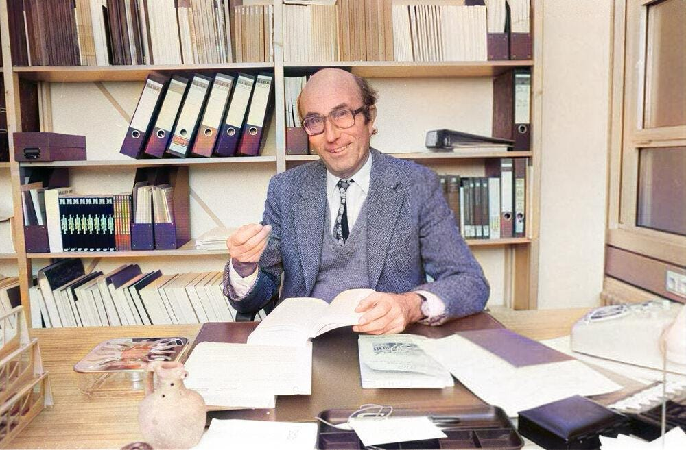
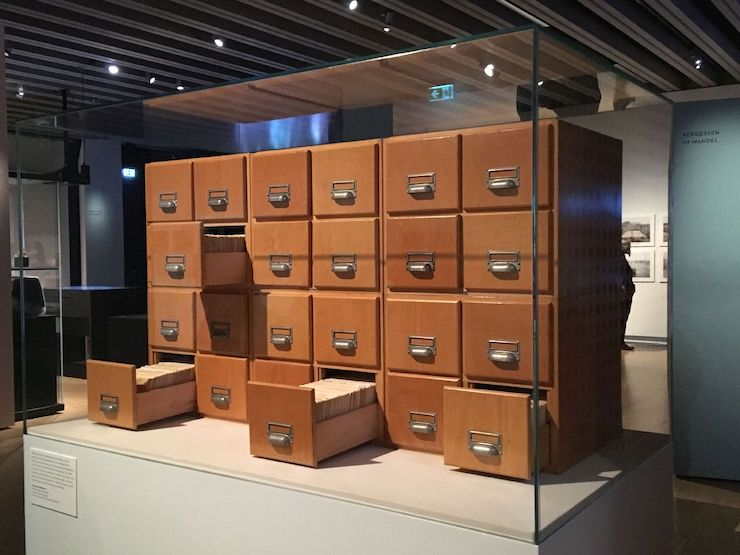
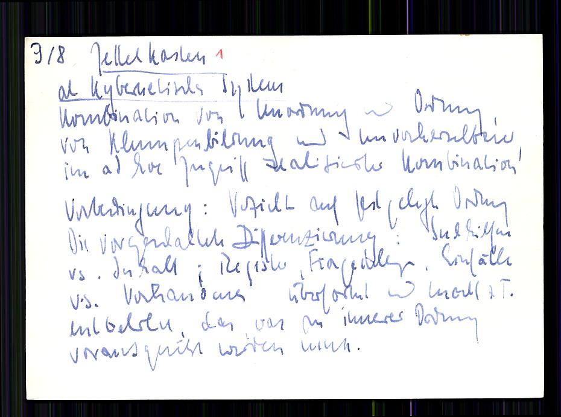
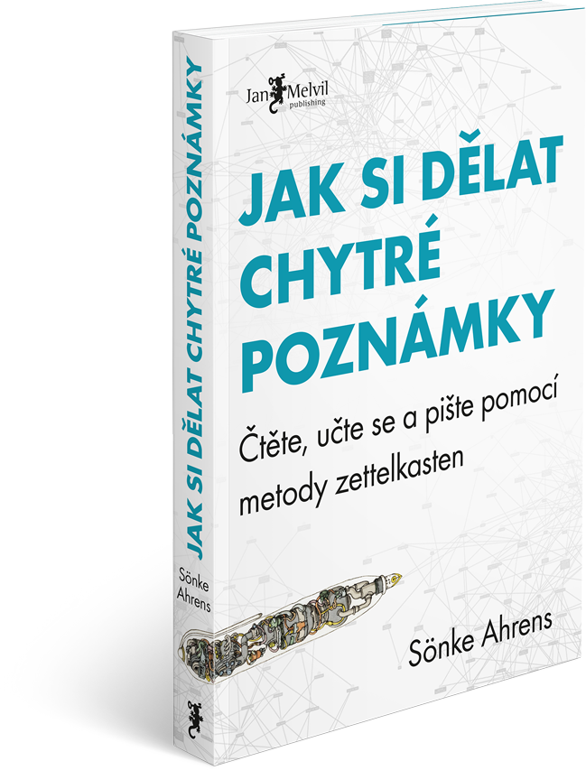
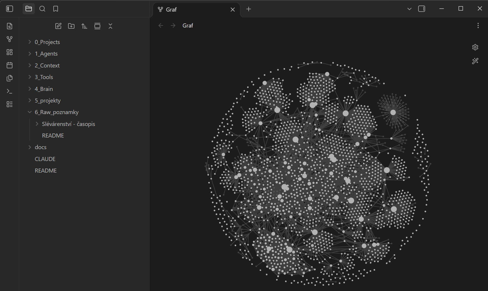

Slévárenské dny v éře AI: od přednášek k druhému mozku
Ing. Pavel Šebesta · Slévárna Kuřim, a.s.
📱 Připravte si telefon pro načtení QR kódu
Kolik si z přednášek, které jste tu slyšeli, budete pamatovat za rok?
Odbočka: AI ve slévárenství · co se děje ve světě
−31 %
CITIC Dicastal
zmetkovitost v marockém závodě: ~40 digitalizací a AI vizuální kontrola
−55 %
DataProphet + Norican
zmetkovitost u výrobců motorových bloků
90 %+
China Foundry
záchyt vad u pískového lití (výzkum)
Zavedeme AI i v naší výrobě?
Šebesta, P.: Adopce AI: Nejsme pozadu sami, ale to není důvod čekat. Slévárenské listy 2026
Proč se do toho zatím nehrnout
Data
Odpovídají data o zmetkovitosti v jednotlivých tavbách (počty, typy vad, míchání šarží na cídírně)?
Chaos v datech
→
Učení AI z nepravdy
→
Chaos systematicky
Slévárna Kuřim · 5/2026
Systémy počkají. Budujme lidi.
📋Interní průzkumz 80 THP 50 odpovědí, 37 používá AI
→
🙋Early adoptersdobrovolníci z kontroly, výroby, obchodu, strojírny a HR
→
💡Sdíleníokénko pro AHA momenty na každém setkání
→
⏱️Výsledekpodklady z ERP k obchodní poradě o 90 % rychleji
Kontrola
Sleduje s AI novinky v normách ISO, doplňuje auditní otázky a převádí PDF do formátů Office.
Obchod
Dispečink, tabulky, e-maily. Nejvíc ji překvapily hodiny němčiny na míru.
Výroba
Poskládal s AI turnusy a směny pro nové pracovníky na cídírně a ruční formovně. Ušetřilo to spoustu hodin.
Teď vy
QR na hlasování
Tři otázky, minuta času
1Používáte AI?
2Co s AI děláte?
3Máte placený nástroj?
Základní nastavení
Ne google.cz
Nástroj
Ten, který vám dává smysl. Copilot v Microsoftu, Gemini u Googlu, ChatGPT, když vás už zná.
Model
Pracuje model, ne aplikace. Placená verze od ~200 Kč měsíčně: lepší modely, režim přemýšlení, méně halucinací.
Kontext
Zapnutá paměť a osobní kontext, se kterým AI začíná každou konverzaci.
Tři návyky: AI-first · sledujte, co děláte opakovaně · hotové je lepší než dokonalé
AI nás musí znát
Na základě toho, co o mně víš, navrhni tři konkrétní věci, kde mi může AI pomoct.
Bez kontextu: univerzální rady, prakticky k ničemu. S osobním kontextem: vaše projekty, vaše procesy, vaše opakované úkoly.
QR: prompt na osobní kontext
Zadání, se kterým AI vede rozhovor a sestaví váš osobní kontext. slevarenskelisty-prompt.vercel.app
O tom ale dnešní přednáška není.
AI už může znát vás. Zná i to, co jste tady slyšeli?
AI umí hledat na internetu. Ve vašich vlastních znalostech zatím ne.
Jak tyto, a nejen tyto, informace uchovat?
Kde dnes končí znalosti z konference
📓
Blok
v šuplíku, rukopis, bez souvislostí
📄
Sborník PDF
abstrakty, ke kterým se nikdo nevrátí
📱
Fotky slidů
stovky obrázků v galerii mobilu
🧠
Hlava
dokud nepřijde další konference
Není to nový nápad
Od kartotéky k druhému mozku
19. stol.
Kartotéka
knihovní katalogy: jedna myšlenka, jedna karta
1952–1997
Zettelkasten
Niklas Luhmann: ~90 000 propojených kartiček
Niklas Luhmann · 1952–1997
Zettelkasten
~90 000 kartiček, na každé jedna myšlenka
Karty nejsou řazené podle témat. Mají číslo a odkazují na sebe: z myšlenky se větví další.
Luhmann o kartotéce mluvil jako o partnerovi, se kterým vede rozhovor
Výsledek: kolem 70 knih a stovky článků
Dnes je celá digitalizovaná (Niklas Luhmann-Archiv, Univerzita Bielefeld)

Niklas Luhmann · zdroj fotky: medium.com

Zettelkasten ve vitríně · zdroj fotky: dmathieu.com

Kartička 9/8 „Zettelkasten als kybernetisches System“ · Niklas Luhmann-Archiv, Univerzita Bielefeld, CC BY-NC-SA 4.0
1Myšlenka
1anavazuje na 1
1a1rozvíjí 1a
2nová myšlenka→ odkaz na 1a1
2017
Chytré poznámky
Sönke Ahrens: propojovat, ne jen ukládat
Sönke Ahrens · 2017
Jak si dělat chytré poznámky
Letmérychlý záznam nápadu, po zpracování vyhodit
→
Biblioze zdroje vlastními slovy, stručně
→
Permanentníjedna myšlenka, celé věty, se zdrojem
Kde vznikají vazby: při zakládání permanentní poznámky. Zařadíte ji za související, odkážete na ni a z ní a přidáte ji do rejstříku.
Ptáte se: odporuje tomu, co už mám? Doplňuje to? Plyne z toho nová otázka?
Co doporučuje: papír a tužka, správce citací (Zotero), kartotéka (Obsidian, Zettlr), textový editor. Víc není třeba.

Obálka: Jan Melvil Publishing, melvil.cz
2020
Obsidian
propojené .md soubory, graf poznámek
2020
Obsidian
Poznámky jsou obyčejné textové soubory .md na vašem disku
Odkazy mezi poznámkami a zpětné odkazy: kartotéka bez papíru
Graf poznámek ukáže souvislosti, které byste jinak neviděli
Funguje offline, data patří vám, ne aplikaci
Můj mozek: Obsidian a AI pracují nad stejnými soubory

Můj Obsidian: složky a graf poznámek
dnes
Druhý mozek s AI
AI čte, třídí, propojuje a odpovídá
Dnes
Nový není princip.
Nové je, že poznámky umí číst i vaše AI.
Obyčejné textové soubory (.md): čte je člověk, čte je AI, nepatří žádné firmě a přežijí jakoukoli aplikaci.
Můj druhý mozek
— souborů
1. den 62. Slévárenských dní
Od přednášky do mozku
🎙️Nahrávka/fotkadiktafon nebo mobil v sále
→
📝Přepisautomaticky, česky
→
📄.md souborshrnutí, klíčová čísla, citace
→
🗺️Zařazenído tematické mapy, propojení
→
💬Otázkyco z toho je pro mě?
Slévárenské dny 2011–2025 · 479 příspěvků v mozku
AI: z úvahy na plenárku za šest let
201147
201262
201354
201447
201546
201944
202128
202244
202339
202437
202531
Digitalizace a AI
informační systém KARAT
informační systémy, APS
nákladový inf. systém
Průmysl 4.0, 1. zmínka o AI
roboty, Průmysl 4.0
automatizace odlévání
MES, data v reálném čase
1. plenárka o AI
Lidé a řízení
Lean Six Sigma
motivace
štíhlá výroba
lidé a krize
spokojenost zaměstnanců
produktivita, kultura
procesní excelence
Ekonomika a energie
krize 2009, nákladový model
nákladovost, energie
nákladovost
ekonomické prostředí
nákladovost
projekt XIX
ztráty z pandemie
energetická krize
světová konkurence
mizející zakázky
WFO summit
Odpady a ESG
odpadové hospodářství
ekologická újma
zákon o odpadech
právní normy
zákon o odpadech
cirkulární ekonomika
ekologické škody
skládky, odpady
ESG
CBAM, recyklace
recyklace odpadů
Formovací materiály
preventivní řízení směsi
jednotná směs v Kuřimi
jednotné směsi
bentonitové směsi
bentonit bez uhlíku
parametry směsí
anorganická pojiva
Geopol
60 let KOFOLA
Geopol
furan → alkyd
Dalších 8 oblastí
litiny · metalurgie oceli · neželezné kovy · přesné lití · technologie lití (vtoky, nálitky, filtrace) · aditivní výroba · tavení a pece · tryskání a apretace · klik na rok je ukáže
Slovo v buňce je příklad z ročníku, ne jediná přednáška. Klik na buňku ukáže všechny názvy příspěvků k tématu, klik na rok všechny z ročníku. Pod rokem počet příspěvků (z názvů, ± pár kusů). 2016–2018 chybí, 2020 se nekonalo.
Zpět k první otázce
Jak máte zpracované informace z těchto přednášek?
Můžeme jít dál
Není čas, aby i sborníky a odborné články vycházely v podobě, se kterou umí pracovat AI?
Přednášející
sdílet přednášku ke stažení pro AI
Časopisy
přepis článku, včetně popisu tabulek a grafů, do textové podoby
Vy
doplňování svých znalostních systémů „druhých mozků“
QR: materiály ke stažení
Jeden QR kód, všechno na jednom místě
Nahrajte si to do své AI a ptejte se
Článek ze Slévárenských listů pro AI
Přepis této prezentace
Přepis mé přednášky (do pár dní)
Prompt pro vaši AI: sestaví váš osobní kontext
Živá ukázka
Zeptejme se mozku
Která témata se na Slévárenských dnech v posledních letech opakují, co je nového a co z toho je použitelné pro Slévárnu Kuřim?
A co dál?
Nebudujte systémy. Budujte lidi.
Lidé se naučí pracovat s AI a začnou přemýšlet, jak ji využít v práci. Může být druhý mozek přínosem pro slévárnu?
Směrnice
Statutární dokumentace
ISO dokumentace
Výrobní postupy
Popisy procesů
Opatření proti zmetkovitosti
Návody k zařízením
Bezpečnostní listy materiálů
QR: materiály ke stažení
Děkuji za pozornost
Materiály ke stažení: článek, přepisy a prompt pro vaši AI.